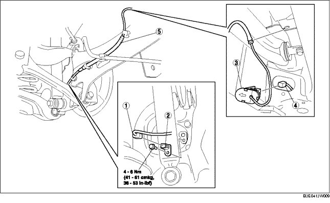

1. Die untere Abdeckung (hinten) ausbauen.
2. Gemäß der Reihenfolge in der Tabelle ausbauen.
3. Der Einbau erfolgt in umgekehrter Reihenfolge.

.
|
1
|
Steckverbinder
|
|
2
|
Hinterrad-Drehzahlsensor
|
|
3
|
ABS Deckel Serviceöffnung
|
|
4
|
Steckverbinder
|
|
5
|
Kabelbaum hinterer ABS-Raddrehzahlsensor
|
1. Steckverbinder des hinteren Niveausensors für automatische Leuchtweitenregelung lösen. (Fahrzeuge mit automatischer Leuchtweitenregulierung)
2. Die Klaue des Deckels für die ABS-Serviceöffnung zusammendrücken, um den Deckel abzulösen.
3. Den Deckel aus der Karosserie entfernen.
1. Den Kabelbaum des ABS-Raddrehzahlsensors wie abgebildet außen am hinteren Feststellbremszug entlang führen.
2. Kabelbaum des hinteren ABS-Raddrehzahlsensors einbauen.
1. Den Deckel der ABS-Serviceöffnung so einsetzen, dass der Pfeil zur Außenseite des Fahrzeugs zeigt.